بسم الله الرحمن الرحيم
Sayyid Abul Ala Maududi - Tafhim al-Qur'an - The Meaning of the Qur'an
 15.
Surah Al Hijr (The Rocky Tract)
15.
Surah Al Hijr (The Rocky Tract)
This Surah takes its name from v. 80.
It is clear from its topics and style that the period of its revelation is about the same as that of Surah Ibrahim, for two things are quite prominent in its background. First, it appears from the repeated warnings in this Surah that in spite of the fact that the Holy Prophet had been propagating the Message for many years, his people in general had not shown any inclination towards its acceptance nay, they had become more and more obdurate and stubborn in their antagonism, enmity and ridicule with the passage of time. Secondly, by that time the Holy Prophet had begun to feel a little tired of making strenuous efforts to eradicate disbelief and opposition of his people. That is why Allah has consoled and comforted him over and over again by way of encouragement.
Though the main topics of the surah are:
warning to those who rejected his Message, opposed it tooth and nail, and ridiculed him, and
comfort and encouragement to the Holy Prophet,
It does not mean that this Surah does not contain admonition and instructions. As a matter of fact, the Quran never confines itself to mere warning; rebuke and censure, but resorts to precept in every suitable place. Accordingly, this Surah contains brief arguments for Tauhid on the one hand, and admonition in the story of Adam and Satan on the other.

In the name of Allah, the Compassionate, the Merciful.
[1] Alif Lam Ra. These are the verses of the Divine Book and the lucid Quran.1
[2-5] The time is not far when the same people who have today refused to accept (the Message of Islam) will regret and say, "we wish we had surrendered to it!" Leave them alone to eat, drink and be merry and to be deluded by false hopes. They will soon realize it. We had prescribed a respite for every habitation that we destroyed before this.2 No community is destroyed before the expiry of its respite nor it is allowed to survive it.
[6-9] They say, "You, upon whom the Divine word3 has been sent down, are surely insane. Why do you not bring angels before us, if what you say be true?" We do not send down angels in this way. When they come down,4 they come down with truth, and then the people are not given respite.5 As regards this Admonition, it is We Who have sent it down, and We Ourself will preserve it.6
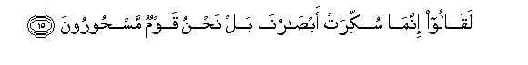
[10-15] O Muhammad! Already We have sent Messengers before you among many of the ancient peoples. But they mocked at each of the Messengers who came to them. Though We cause it (Admonition) to enter into their hearts (like a rod), they would not believe in it.7 And the same has been the way of such people since ancient times. Even if We had opened a gate for them in heaven, and they had begun to ascend through it higher during day time, they would have said. "Our eyes have been dazzled; nay, we have been bewitched."
[16-18] It is We Who have divided the heavens into many fortified spheres8 for the sake of administration and adorned and decked them out fair to the beholders,9 and guarded them from every accursed Satan.10 No Satan can pass through them except that an eaves-dropper might hear something,11 but a fiery flame pursues that eaves-dropper.12
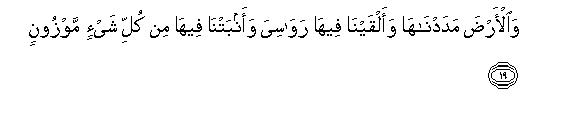
[19-20] We stretched forth the Earth, and set mountains firmly upon it, and caused to grow therein every kind of vegetable in balanced measure.13 And We provided therein means of sustenance for you and for many other creatures for whom you do not provide.
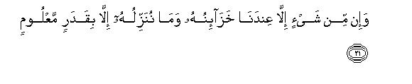
[21] There is not a thing whose treasures are not with Us, and We send down each thing in appropriate measure.14
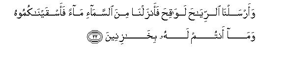
[22] It is We Who send the fertilizing winds: then We send down' water from heaven, and then We give it to you to drink; and it is not you who hold the store of this wealth.
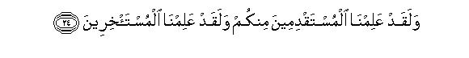
[23-25] It is We Who give life and death and We will be the inheritors of all.15 We have full knowledge about those who lived before you, and We are keeping watch over their successors. Most surely your Lord will gather them together for He is All-Wise, All-Knowing.16
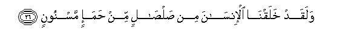
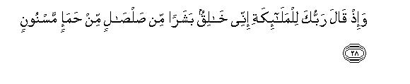
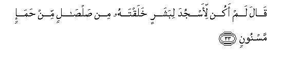
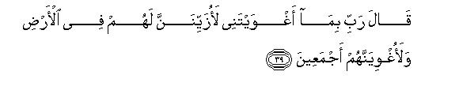

[26-43] We created Man from dried clay of rotten earth:17 and before him We had created Jinn from the flame of heat.18 Then recall to mind the time when your Lord said to the angels, "I am going to create a man from dried clay of rotten earth. When I have brought him to perfection and breathed of My spirit19 into him, you should bow down before him all together." Accordingly all the angels bowed down except Iblis: he refused to join those who bowed down.20 The Lord said, "O Iblis! What is the matter with you that you have not joined those who have bowed down?" He replied, "It does not behoove me to bow down before this man whom you have created from dried clay of rotten earth." The Lord said, "Get away from here, for you have become accursed: the curse shall rest upon you till the Day of Retribution."21 .At this he requested, "My Lord! then give me respite till that Day when mankind shall be resurrected." Allah said, "Well! you are given respite till the Day of predestined time." Iblis replied, "Lord, because Thou hast beguiled me, I will create allurements for them22 and seduce them except those of Thy servants whom Thou hast chosen for Thyself from amongst them. " Allah replied, "This is the straight way that reaches Me.23 Indeed, thou shalt have no power over My sincere servants. Thou wilt succeed only in beguiling those who shall follow thee,24 and they shall all be destined for Hell."25
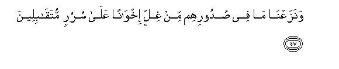
[44-48] This Hell (with which the followers of Iblis have been threatened) has seven gates, and each gate has been specified for a separate group of them.26 In contrast to them the pious people27 shall go to the gardens and fountains. (It will be said to them), "Enter into these in peace and security." We will remove from their hearts even the little bit of spite that will be therein,28 and they will become like brethren, and sit face to face on couches. They will have no toil to weary them nor will they be cast out from there.29
[49-50] O Prophet! tell My servants, "I am Forgiving and Merciful, but at the same time My chastisement is also a severe chastisement."
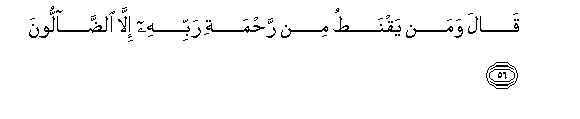

[51-60] And tell them the story of the guests of Abraham.30 When they came to him, they said, "Peace be to you". But he replied, "We are afraid of you."31 They said, "Do not be afraid of us. We give you the good news of a sagacious son."32 Abraham said, "What! do you give me the good news of a son in my old age? Just consider what kind of good news you are giving me." They replied, "We are giving you a true good news; you should not be of those who despair". Abraham replied, only those who go astray, despair of their Lord's Mercy?' Then he asked them, "O Messengers of Allah! What is the expedition for which you have been sent?"33 They said, "We have been sent to (punish) a criminal people34 with the exception of Lot's family; we will rescue all of them except his wife, who (Allah says) has been destined to remain with those who will stay behind."
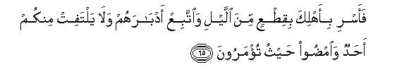
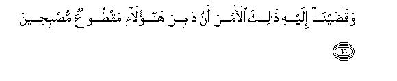
[61-66] Afterwards when these envoys came to the house of Lot,35 he said, "You appear to be strangers."36 They answered, "Nay, but we have come to you with that concerning which these people had doubts. We tell you the truth that we have come to you with the truth. You should, therefore, depart with your people in the last hours of the night and you yourself should follow them in their rear;37 let none of you turn round to look behind;38 go straight where you are being bidden." And We informed him of Our decree that they shall be utterly destroyed by the next morning.
[67-71] And the people of the town rushed rejoicing to the house of Lot.39 He said, "Brethren! These are my guests: therefore do not dishonor me. Fear God and do not put me to shame." They replied, "Have we not forbidden you to plead for all and sundry?" At last Lot pleaded, "Here are my daughters,40 if you are bent on it."
[72] By your life, O Prophet, they were at that time so intoxicated with lust as to be quite beside themselves with passion.
[73-74] At last a severe blast overtook them at dawn. Then We turned their habitations up-side-down and We rained stones of baked clay upon them.41
[75-77] There are big Signs in these events for men of understanding. And the smitten territory still lies on the high way.42 Indeed there is an admonition in it for true believers.
[78-79] As the people of Al Aikah43 were unjust, We took vengeance on them. And the ruined habitations of these two Communities lie upon the open highway.44
[80-84] The people of Al Hijr45 also treated the Messengers as impostors and We sent Our Revelations and showed Our Signs to them, but they went on ignoring all these things. They hewed their dwellings into the mountains and apparently lived in full security. But at last a violent blast over took them with the approach of the morning, and all that they had achieved proved of no avail to them.46
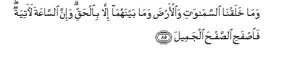
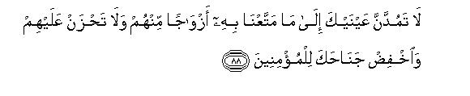
[85-93] We have not based the creation of the Earth and the Heavens and everything but truth,47 and our judgment is sure to come. So O Muhammad, overlook . (their misbehavior) in a gracious manner. Indeed your Lord is the Creator of all and is All-Knowing.48 We have given you seven verses that are worthy of recitation over and over again,49 and We have also bestowed on you the glorious Qur'an.50 Do not even look at the worldly wealth We have given to different people from among them nor grieve at their condition.51 Leave them alone and attend to the Believers. Tell (the disbelievers), "I am a plain warner only. This warning is like the warning We sent to the schismatics, who have caused divisions in their Qur'an"52 So by your Lord, We will surely take account from them concerning what they had been doing.
[94-96] So, O Prophet, proclaim publicly what you are being bidden, and never mind those who practice shirk. We suffice on your behalf to take to task those who have set up other gods along with Allah: they will come to know shortly (their folly).

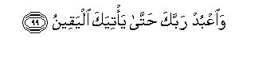
[97-99] We know that your heart is distressed at the things they say against you. (This is the remedy:) you should glorify your Lord with His praise, and fall in prostration before Him, and serve your Lord till that last hour which is sure to come.53
1This verse is the brief introduction to the Surah, and immediately after this begins its theme. "These are the verses of the lucid Qur'an": These are the verses of that Qur'an which makes its meaning lucid and understandable.
2This is to refute the fallacious argument of the disbelievers that Muhammad (Allah's peace be upon him) was not a true Prophet because they had received no prompt punishment for their disbelief. It is like this: "We have never seized a community at the first committal of kufr.
We prescribe a limit for every community to hear and understand the message and reform its ways. Then We tolerate its mischief and evil deeds up to that limit and allow it full freedom to do as it likes, and give it respite till the term expires. That is why We are tolerating their attitude of ridicule and denial. (For the full meaning of respite, please refer to E.N. 18 of Surah Ibrahim).
3The word (Zikr) literally means "to cause to remember, "to caution" and "to give advice". But the Qur'an has used it as a technical term for "Admonition", which comes as a precept. Thus all the Books that had been sent down to the Messengers were Zikr, and the Qur'an is also Zikr.
4This was a sarcastic remark that was made by the opponents, for they did not acknowledge that the "Admonition" had been sent down to the Holy Prophet: otherwise they could not say that he was "insane". What they really meant by this remark was: "You, who claim that the "Admonition" has been sent down to you, are insane". A similar remark was also made by Pharaoh concerning Prophet Moses. Addressing his courtiers, he said, "The Messenger who has been sent to you is insane". (XXVI: 27)
5"We do not send down the angels in this way": We do not send down the angels for the mere fun of it in response to the request of the people: nor are they sent to unveil the Reality before them in order to show to them all the "unseen" things to which the Messengers invite them to believe. As a matter of fact, angels are sent down on that occasion when it is decreed to pass judgment on sane wicked people. At that time the judgment comes into operation without extending. any invitation to the condemned people to accept the Message, for their period of respite ends as soon as the "Reality" is unveiled before them.
"they come down with truth" = "they bring down truth with them." That is they come down to eradicate falsehood and to establish truth in its stead. Or, in other words, it means, “they come down to put into force the judgment of Allah.”
6That is, "You should note it well that it is We Who have sent this `Word'. Thus it is not Our Messenger whom you are calling `insane' but in fact this abusive remark applies to Us. Moreover, you should know that it is Our Word and We are preserving it; therefore, you can do no harm to it; nor can you discredit it by your ridicules, taunts and objections: nor can you hamper its progress, whatever you may do against it: nor will anyone be ever able to change or tamper with it."
7The majority of the translators and commentators are of the opinion that the pronoun `it' in ".... cause it" in v. 12, refers to their "mockery", occurring in v. 11, and in “would not believe in it” in v. 13, refers to the "Admonition" occurring in v. 9. Then vv. 12-13 will be rendered like this: "Thus we cause mockery enter into the hearts of the criminals and they do not believe in the Admonition .... " Though grammatically there is nothing wrong with this version, yet our version of "it" will be better even grammatically. According to this v. 12 will mean, "When the Admonition enters into the hearts of the believers it gives them peace of mind and comfort of heart. But when the same enters into the hearts of the criminals it becomes a hot rod, and burns their minds and hearts.”
8In the preceding verses (14-15) it was stated that the disbelievers had become so hardened against the Qur'an that they would not have believed in it even if they had ascended the Heaven and seen with their own eyes the Signs mentioned in it. Now in vv.16-22, some of the Signs arc being cited in order to convince there of its truth.
"Fortified spheres" (buruj) are Signs of Allah for it is not possible to pass through one sphere of the Heaven into another, as each sphere of the space has been fortified by invisible boundaries. In this connection, it may be noted that literally the Arabic word burj means "a fortified place" but as a technical term of ancient astronomy this stood for each of the twelve Signs of the Zodiac, which marked the sun's path through the heavens. This has led some of the commentators to form the opinion that in this verse the word buruj refers to the same. But there are some others who think that it means "planets". However, if we consider this word in the context of v. 19, we are led to the conclusion that probably it stands for "spheres".
9"We have adorned and decked the "fortified spheres": "We have placed a shining star or planet in each of these spheres and made them look beautiful". In other words, it means; "We have not made the boundless universe dismal, desolate and frightful, but so beautiful that one finds marvelous order and harmony in it everywhere, and sights therein are. so attractive that each one of these charms hearts and minds. This wonderful structure of the universe is a clear proof of the fact that its Creator is not only Great and All-Wise but is also a perfect Artist". The Qur'an has also stated this aspect of the Creator in XXXII: 7: “(Allah is) that God Who has created in perfect beauty everything He has created.”
10That is, "These spheres are so fortified that they are beyond the reach of every Satan, for all Satans including those of jinns, have been confined to that sphere in which the Earth has been placed and they enjoy no more access to visit other spheres than the other dwellers of this sphere. This has been mentioned in order to remove a common misunderstanding. The common people believed, .and still believe, that Satan and his descendants have a free access to every place in the universe. On the contrary, the Qur'an says that Satans cannot go beyond a certain limit and they have no unlimited power of ascension.
11This is the answer to the false claim of the soothsayers, diviners, hermits, conjurers and the like who pretended to receive communications from the Heaven. The Qur'an says that in fact they do not possess any means of obtaining information about unseen things. Satans, however, try to eaves-drop because they are by nature more like angels than human beings, but in reality, they succeed in obtaining very little information about it.
12In Arabic the word shihab-i-mubin literally means "fiery flame". In XXXVII: 10, the same thing has been called shihab-i-thaqib ("flame that pierces through darkness"). 'This may or may not necessarily be a "meteor" for it is just possible that it may be some type of rays such as "Cosmic Rays" or even a stronger type which we have not been able to discover as yet. Anyhow if the "fiery flame" that pursues Satans may be taken to be a meteor, a countless number of these can form a fortification around our sphere of the universe. Scientific observations made with the help of the telescope have shown that billions of these meteors are rushing from space in mass of "rainfall" towards the earth's atmosphere. Such a scene was witnessed in an eastern pan of North America on November 13, 1833. This is so strong a fortification that it can prevent Satans from passing through any fortified sphere.
With the help of the above, one can form a mental picture of the "fortified spheres" . Though there is no visible "wall" to keep distinct and separate one sphere from the others, Allah has securely guarded each of these spheres by invisible "walls" against each other. That is why our "planet" has remained safe in spite of the occasional "rainfall" of countless meteors. For as soon as they cross the protective wall of our sphere, they are burnt to ashes. But sometimes a meteorite reaches the earth from outer space as if to warn the dwellers of this planet of the existence of the "power" of the Creator. For instance, the biggest of these weighs 645 pounds and it is obvious from this that if the earth had not been made safe and secure by means of "fortified spheres" the rain of the shooting stars would have utterly annihilated it long long ago. It is these "fortified spheres" which the Qur'an calls "buruj."
13The growth of every kind of plant in a limited extent is another Sign of the wisdom and power of Allah. For the generative power of every vegetable plant is so great that if free growth had been allowed to even one kind of plant, it would have covered the whole surface of the Earth. But it is by the design of the All-Wise and All-Powerful Creator that every kind of vegetable is produced in a balanced measure. There is another aspect of the vegetable life. Each and every kind of it is allowed to grow only to a fixed size, height, and thickness, which is a proof of the fact that the Creator himself prescribed the structure, the shape, the size, the height, the leaves and branches, and the number of each and every plant, and no plant is allowed to go beyond any of these fixed limits.
14This is to bring home the fact that it is not vegetable life alone that has a fixed limit to its growth, etc: The same is true of everything that exists, whether it be air, water, light, heat, cold, mineral, vegetable. animal or power or energy, in short, each and every thing exists in the prescribed quantity, number, etc. , which neither decreases nor increases. It is this "determined course", in each and every thing, which has produced appropriate balance and proportion in the entire system of the universe to such a perfection that one is led to the inevitable conclusion that the whole thing has been designed by its All-Wise Creator. For, had the universe come into existence by mere accident or had it been created by many gods, it was impossible to have such a perfect balance and appropriate proportion with perpetual consistence in so many different things and powers.
15It is to impress this: "your worldly life and all you possess are transitory and temporary, and Allah alone is Eternal. Your end shall come sooner or later, and you shall leave everything behind in this world, which will again become a part of Our treasure."
16"He is All-Wise", therefore His Wisdom demands that He should gather the whole of mankind and reward or punish each individual in accordance with his deeds. And "He is All-Knowing" : therefore no individual, whosoever he be, can escape from Him. As each and every particle of each and every individual is in His knowledge, He is able to bring the whole of mankind to life in the Hereafter. Thus anyone who denies "Life-in-the-Hereafter" is really ignorant of the Wisdom of Allah; and anyone who considers it impossible that those particles of the human body, which wen all scattered about, could again be brought together in the form of the body that was alive, is ignorant of the All Comprehensive knowledge and power of Allah.
17The Arabic word "salsal" means the dried clay which produces a sound like pottery."
"Hams " is "the black mud which has become so rotten as to be in a fermented state."
"Masnun" has a double meaning: (a) "rotten clay which has become greasy" (b) clay which has been molded into a shape." It is clear from the wording of the text that at first the image of man was made of clay from rotten earth and when it dried up, soul was breathed into it. Thus the Qur'an positively refutes the Darwinian theory of Evolution that man came into existence after passing through continuous genetic adaptations. It will, therefore, be a futile attempt, as some modernized commentators have done, to prove that theory from the Qur'an.
18As `samum' is not wind, `nar-i-samum" will mean "flame of heat" ("intense heat") and not of "fin." This is the explanation of those passages in which it has been stated that jinns have been created from fire.
19"....(when I have) breathed of My spirit into him...." = "....(when I have) cast a reflection of My Divine characteristics on him.... " This shows that the soul of man implies "life, knowledge, power, will, discretion and other human characteristics in the aggregate. These are in reality a slight reflection of Divine characteristics that has been cast on the human body, which was originally created from dried clay. And it is this Divine reflection on the human body which has raised him to the position of the Vicegerent of Allah and made him that worthy being before whom angels and every earthly thing should bow down.
As a matter of fact, the source of each characteristic of everything is one Divine characteristic or the other, as is borne by a Tradition: “Allah divided Mercy into one hundred parts: then He reserved ninety-nine parts for Himself and sent down the remaining one part to the Earth. It is because of that one part that the creatures show mercy to one another. So much so that it is due to this that an animal refrains from placing the hoof on its young ones.”
In this connection one has to be on strict guard against the notion that the possession of a part of any Divine characteristic amounts to the possession of a part of Godhead. This is because Godhead is absolutely beyond the reach of each and every creation.
20Please compare this passage (vv. 30-43) with II: 30-39, IV: 117-120 and VII: 11-25 and also refer to E.N.'s appended to these.
21That is, "You shall remain accused up to the Resurrection. Then you shall be punished for your disobedience on the Day of Judgment."
22That is, "Thou hast beguiled me by commanding me to bow down before a creature who is inferior to me: for it is obvious that I could not obey such an order. Therefore, I will now beguile them and disobey Thee." In other words, Iblis meant to say, "I will make the worldly life, its enjoyments and its transitory benefits so alluring for man that he will forget the responsibilities of the Vicegerent of Allah, and that he shall have to render his account in the Hereafter. They will also forget Thee and will disobey Thee, even though they would profess to remember Thee."
23This verse (41) may have another meaning: "This is the right thing: I also will stick to this."
24This verse (42) also may have another meaning: "You will have no power over My servants (common people) to force them to disobey Me. However, We will give freedom of action to those who will willingly or deliberately follow you, and we will not forcibly prevent them from your way, if they intended to follow you."
According to the first rendering, these verses will mean this: "The way followed by My sincere servants is the only straight way to reach Me. Satan will have no power over those people who follow it, for I will choose them to be My own servants." Satan himself admitted that he will not be able to entice them. On the contrary, he will succeed in beguiling those people, who themselves will deviate from the way of obedience. They will then wander farther and farther away following his temptations and allurements.
According to the second meaning, the passage will mean this: "When Satan challenged that he would beguile people from the Way of Allah by making this worldly life very tempting to them, Allah accepted his challenge but made it clear to him that he was being allowed only to beguile people with temptation, but was not being given any power to force them to deviate from the Right Way. At this, Satan clarified that his challenge did not apply to those people whom Allah will choose for Himself. As this exception might have led to a misunderstanding that Allah may choose any people for Himself to keep them safe and secure from the reach of Satan, Allah clarified it, saying "Only that person will follow you, who himself will deviate from the Right Way. " As a corollary to this, "That person, who will not deviate from the Right Way will not follow you, and will, thus become Our servant, whom We will choose for Our-self."
25In order to comprehend the purpose for which the story of Prophet Adam and Satan has been related here, we should keep in mind the context in which this has occurred. In the preceding verses (1-25), it has been stated that the disbelievers were following the ways of deviation that would lead them to perdition. This story has been related to warn them that the ways they were following were the ways of Satan, their eternal enemy, so as to say, "You should realize the consequences of following Satan, who has enticed you in this snare, and is leading you to the lowest depths of degradation because of this enmity and envy. In contrast to this, Our Prophet is doing his utmost w free you from his snare and lead you to the height of success, which as a man you should desire to achieve. But it is a pity that you are regarding your enemy (Satan) as your friend, and your friend (Our ) as your enemy."
Secondly, the story also makes quite clear to them this thing:
"There is only one way of salvation and that is the Way of obedience to Allah. If you discard this Way, every other way will be a way of Satan which will take you directly to Hell."
Than this story is meant to bring home to them this fact: You yourselves are responsible for your wrong deeds and not Satan; for, the most he can do is to beguile you from the obedience of Allah and hold temptations before you It is therefore, your own concern and responsibility to be beguiled or not to be beguiled by Satan. "
26Sinners will be divided into different groups in accordance with their different sins for their entry into Hell from seven different gates specified for each different sin. For instance, the group of atheists shall enter into Hell by one of the seven gates specified for their group. Likewise, mushriks, hypocrites, self-seekers, sensualists, tyrants, propagandists and leaders of disbelief, etc., etc., shall each enter into Hell through the gates specified for their group.
27The pious people are those who did not follow Satan but feared Allah and lived lives of obedience to Him.
28That is, "If any spite might have been caused in their hearts in this world because of misunderstandings between the pious people, it shall be removed at the time of their entry into Paradise and they will bear no ill-feelings there against each other." (Please refer also to E.N. 320 of Al-A'araf.)
29This verse is explained by the following Tradition: "It will be announced to the dwellers of the Gardens, `Now you will remain hale and hearty for ever and shall never fall ill: now you will enjoy eternal life and shall never die: now you will remain young for ever and never grow old, and now you will remain for ever in Paradise and shall never have to move away from it' . " There arc other Traditions that further elucidate lift in Paradise to this effect: "The dwellers shall have no toil to perform for their livelihood and necessities of lift. They will get everything without any labor whatsoever."
30The story of Prophets Abraham and Lot has been related to tell the disbelievers of Makkah how angels come down with truth. This was in response to their demand. "Why do you not bring angels before us, if what you say be true?" (v. 7). Then, only this brief answer was given: "We do not send down angels in this way. When they come down, they come down with truth" (v. 8). Now these two events arc cited as two concrete forms of "truth" with which the angels came, as if to ask the disbelievers, "Now decide for yourselves which of these two forms of truth you want angels to bring to you. It is obvious that you do not deserve that "truth" which was sent to Prophet Abraham. Do you then desire that `truth" which the angels brought to the' people of Prophet Lot?"
31Please compare this story of Prophet Abraham with that contained in XI: 6 9-76.
32" ... a sagacious son" : Prophet Isaac . His name has been mentioned in connection with this good news in XI: 71.
33It appears from the question of Prophet Abraham that angels are sent down in human shape only on extraordinary occasions and on some important expedition.
34The fact that the angels did not name the people of Lot but merely referred to them as "the wicked people", shows that these people had become so notorious for their wicked deeds that there was no need to mention them by name before Prophet Abraham, who was well acquainted with the moral condition of all the people around him.
35Please compare this with VII: 80-84 and XI: 77-83.
36Here the story has been related in brief. But we learn from XI: 77-83 that Prophet Lot was greatly perturbed and distressed at the visit of the angels. He said to himself, "This is a day of woe." The reason why he was distressed, as implied in the Qur'an and explicitly expressed in the Traditions, was that the angels had come to Prophet Lot in the shape of beautiful boys, and he knew how perverse and wicked his people were. He was distressed for he could not send them away because they were his guests, and because he did not know how to protect them from those villains.
37That is, “You should walk behind your people lest anyone of them should stay behind.”
38It did not mean: "look not behind thee, lest thou be consumed."as stated in the Bible. But it merely meant to warn them: "None of you should turn round to see what was happening behind them lest you should stop to see the fun, when you heard the cries of the smitten people. For it is neither the time of enjoying "fun", nor of shedding tears of regret. If you stop even for a minute in the territory of the smitten people you also might get hurt from the rain of stones."
39This shows that those People had gone to the lowest depths of immorality. No sooner did they hear the news of the arrival of handsome strangers in their town than they rushed rejoicing to the house of Prophet Lot and impudently demanded that he should hand over his guests to them for the gratification of their lust. The pity is that there had remained not a single person among them to make a protest against such a heinous sin. Moreover, this shows that all of them, as a community, had totally lost every sense of decency, and they felt no shame at all to make such a wicked demand on him openly. The very fact, that they felt no hesitation in making such a wicked demand brazen- facedly from a pious and holy man like Prophet Lot, shows that the heinous crime was so common among them that they would not spare anyone.
The Talmud records many instances of the all-round moral degradation of the people of Lot. Once a stranger was passing through their territory. He was forced by coming darkness to pass the night near Sodom. As he had his own provisions with him, he did not stand in any need of help from the towns-folk; so he lay under a tree to pass the night. But a Sodomite entreated him to accompany him to his house. During the night he did away with the ass and merchandise of the stranger. When he began to cry for help in the morning, the towns-folk came there not to help him but to rob him of what had been left with him.
On one occasion Hadrat Sarah sent her slave to Sodom to inquire after Prophet Lot's household. When the slave entered the town, he saw that a Sodomite was beating a stranger. Naturally the slave of Hadrat Sarah tried to rouse his sense of decency, saying, "why do you ill-treat helpless strangers like this?" In answer to this appeal, his head was broken in public.
On another occasion a poor man happened to come to Sodom but no one gave him anything to eat. When he was half dead with starvation, he fell to the ground in a helpless plight. A daughter of Prophet Lot saw him and sent some food for him. At this the Sodomites reproached Prophet Lot and his daughter and threatened to expel them from there, if they would not refrain from such "deeds"!
After citing several similar incidents, the Talmud says that those people had become so cruel, so deceitful and so dishonest in their dealings that no traveler could pass safe through their territory nor could a poor person expect any food or help from them. Many a time it so happened that a poor stranger came there, and died from hunger. Then they would strip the clothes from his body and bury him naked! If a foreigner committed the blunder of visiting their territory, they would publicly rob him of everything, and make fool of him if he appealed to them to redress the wrong. Then they would openly commit shameless deeds in the gardens which they had grown in their valley because there was none to rebuke them except Prophet Lot. The Quran has summed up the whole of their wicked story in two concise sentences:(1) ".They had already been committing very wicked deeds" XI: 78, and (2) "You gratify your lust with males: you rob travelers, and you commit wicked deeds publicly in your assemblies."
40In E.N. 87 of Surah Hud, it has been explained what Prophet Lot meant by this. It may also be added that such words as these were uttered by an honorable man like him in the last resort, when all his entreaties and earnest requests had failed to prevent those people from their evil designs towards his guests.
Here it will be worthwhile to clear the significance of the words which were uttered by Prophet Lot as they occur in Surah Hud (v. 78). When he entreated those wicked people not to molest his guests, saying, "Here are my daughters....", he was unaware that his guests were angels in the disguise of handsome boys. The angels revealed their identity only when the wicked crowd gathered at the residence of his guests and began to threaten them with their wicked designs, and Prophet Lot began to lament, "I wish I had the power to set you right or I could find some strong support for refuge." It was then that the angels revealed themselves, saying, "We are envoys sent by your Lord.... " This sequence of events shows that Prophet Lot had made that "offer" only when he had felt to be utterly helpless.
It is very important to keep this in view because the sequences of events in this Surah is different from that in Surah Hud. One is liable to have a misunderstanding as to why Prophet Lot wailed and lamented when he knew all the while that his guests were angels and could defend themselves against those wicked people.
As regards the apparent difference between the two sequences, it may be pointed out that here the important thing to be stated is that the angels come with the truth. Therefore that part of the story (vv. 61-66) has been related first in order to make the point more prominent.
41These "stones of baked clay" might have been meteoric showers or volcanic eruptions that flew and rained upon them, or these might have been blown by a strong wind.
42That is, "That smitten territory lies on the high road from Hijaz (Arabia) to Syria and Egypt" . Travelers come across these Signs of destruction which are very prominent in the territory that lies to the south-east of the Dead Sea. The geographers are of the opinion that there is no other land on the surface of the Earth which looks desolate as this territory, especially its southern part.
43The people of Al-Aikah were the community of Prophet Shu`aib and were called Midianites after the name of their capital city and their territory. As regards Al-Aikah, it was the ancient name of Tabuk and literally means a “thick forest.”
44Midian lay on the route from Hijaz to Palestine and Syria.
45Al-Hijr was the capital city of the people of Thamud, and its ruins are found near the modern city of Al-'Ula' which is to the north west of Al-Madinah, and lies on the route from AI-Madinah to Tabuk. Though the caravans had to pass through the valley of Al-Hijr, the Holy Prophet had forbidden the Muslims to stay in the valley on their journey.
When Ibn Batutah reached there in the eighth century of Hijrah on his way to Makkah, he wrote: "I have seen the buildings of Thamud hewed into red mountains; the paintings look so bright as if they have been put on only recently....and rotten bones of human beings are found in them even today." (See E.N. 57 of VII.)
46That is, "Their strong and secure buildings, which they had hewed into the mountains, could not protect them from the blast."
47This was to reassure the Holy Prophet that ultimately he would come out successful because he was propagating the Truth, and the whole of the universe was based on truth. Such an assurance was urgently needed because at that tithe falsehood appeared to be triumphant over the Truth. This implies, "O Prophet, do not worry at all at the apparent "success" of falsehood for this is temporary. Likewise the difficulties, the obstacles and the troubles in the way of truth are not permanent. Take courage, and have confidence in the cause of the Truth and you will triumph over falsehood because the whole system of the universe is akin to truth and averse to falsehood. Therefore, truth is permanent and falsehood is perishable" (Please refer to E.N.'s 25 26,35-39 of Surah Ibrahim).
48These attributes of Allah have been mentioned to reassure the Holy Prophet as if to say, "As Allah is the Creator, He has complete power over all his creatures, and no one is able to escape His punishment. Moreover, He is All Knowing: He is fully aware that you are exerting your utmost for their reform, and He knows also their evil machinations against your efforts for reform. Therefore, you need not worry on this account, but you should wait patiently and with confidence that at the appropriate time they will be dealt with justly."
49These seven verses which are recited over and over again in every prescribed salat are the verses of Al-Fatihah. Though some of the commentators are of the view that this “Al-Mathani,” refers to the seven Surahs which contain two hundred or more verses, that is, II-VII and (VIII-IX) or X. But the majority of the early commentators opine that it refers to AI-Fatihah. Imam Bukhari has cited two authentic Traditions in support of the view that it refers to Al-Fatihah.
50The mention of the precious gift of the Glorious Qur'an has been made also to console the Holy Prophet and his followers that they should not even look at the worldly wealth of their opponents because that was nothing as compared with this precious wealth. In order to grasp the full significance of this, one should keep in view the fact that at that time the Holy Prophet and his Companions were suffering badly from poverty. The trading activities of the Holy Prophet had almost come to an end during the period in which he had been engaged in his Mission. Besides this, he had almost used up the whole wealth of Hadrat Khaijah. As regards his Companions, some of the young men had been turned out of their homes and reduced to poverty. The economic boycott had mined the business of those who were engaged in trade. There were others who were mere slaves or proteges of the Quraish and had no economic position whatever. In addition to their sad economic plight, all the Muslims, along with the Holy Prophet, were suffering persecution from the people of Makkah and its surroundings, In short, they were so much persecuted, ridiculed and insulted that no one of them was safe from physical and mental torture. On the other side, the Quraish, their opponents and persecutors, enjoyed all the good things of this world, and lived lives of happiness and luxury. This is the background of the reassurance given to the Believers, as if to say, "Why should you feel disheartened at this? We have given you "wealth" which surpasses all kinds of worldly riches. Therefore, your opponents should envy your knowledge and high morals; you need not envy their ill-canned wealth and their wicked enjoyments, for when they will go before their Lord, they themselves will find that they had not brought such wealth as carries any value there. "
51That is, "Do not grieve that they consider you as their enemy, though you .are their sincere well-wisher; that they regard their vices as their virtues; that they are not only themselves following but leading their followers on that way which inevitably leads to destruction: nay, they are doing their worst to oppose the reformative efforts of the one who is showing them the way of peace."
52The schismatics were the Jews for they had split their religion into many parts and caused division in it. They believed in certain parts and rejected the other parts, and detracted some things from it and added others to it. Thus they had been divided into many sectarian groups, which were opposed to one another.
"They have cut their Qur'an (Torah) into pieces" = "They believe in certain parts of it and reject other parts. " The same thing has been stated in II: 85 like this: ".... Do you then believe in one part of the Scriptures and disbelieve in the other parts .... "
" .... this warning is like the warning We sent to the schismatics (Jews)." This is meant to warn the disbelievers that they should learn a lesson from the plight of the Jews who neglected the warning that was given to than by God, and persisted in their wrong ways, as if to say, "You are beholding the degradation of the Jews. Do you like to meet with the same end by neglecting this warning?"
53That is Salat and worship of your Lord are the only means which can generate in you that power of sustenance which is required to stand resolutely against the troubles and afflictions you will inevitably encounter in the propagation of the Message of the Truth and reform of humanity. This will comfort you, fill you with courage and enable you to perform that Divine Mission on which you have been sent in the face of abuse, derision and obstacles."